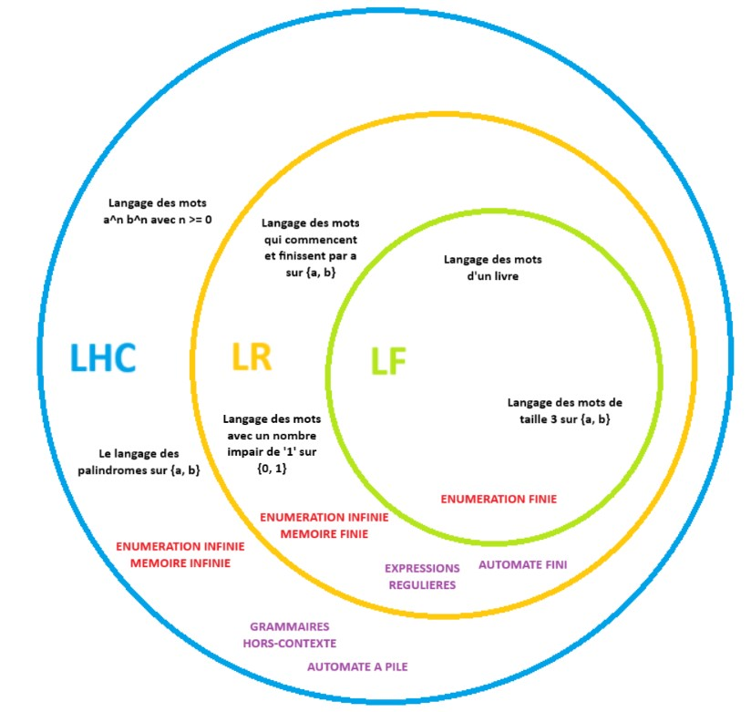
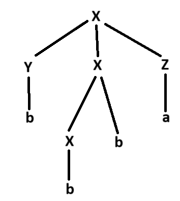
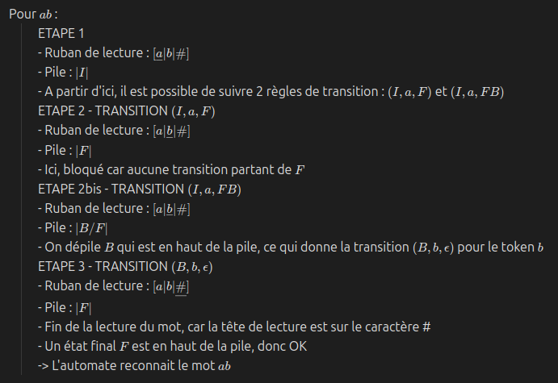
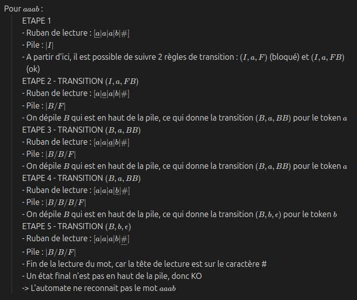
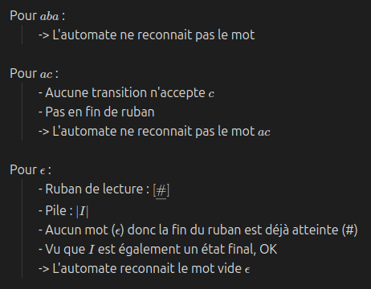
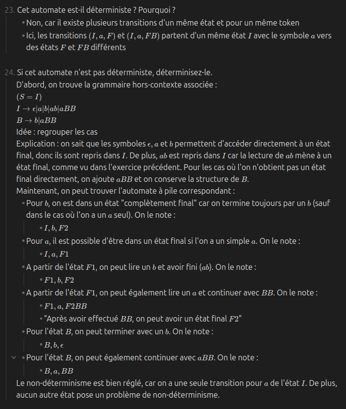

Dernière mise à jour : 13/10/2025
Lors du chapitre précédent, nous avons vu les langages réguliers. Bien qu'intéressants, ces types de langage avaient une principale faiblesse : une mémoire finie. Par exemple, considérons l'alphabet $\{ a, b \}$ et le langage "les mots qui ont autant de $a$ que de $b$". Pour dire que ce langage est régulier, il faut pouvoir le représenter par une expression régulière (ou bien un automate fini). Cependant, on se rend vite compte qu'il est impossible de trouver une expression régulière pour ce langage :
En conséquence, on ne trouvera jamais une expression régulière permettant de représenter ce langage. Cependant, nous allons découvrir un nouveau type de langage qui permet de le représenter : les langages hors-contexte.
Un langage hors-contexte est un langage qui peut être représenté par une grammaire hors-contexte ou un automate à pile. Souvent, on prouve qu'un langage est régulier en le représentant par une de ces deux formes-ci.
Un langage hors-contexte n'est pas nécessairement un langage régulier. Ceci est dû au fait que les langages réguliers sont des sous-ensembles des langages hors-contexte, donc on peut très bien trouver un langage hors-contexte qui n'est pas régulier.
Nous pouvons classifier les différents types de langages que nous avons vu :

La représentation peut se visualiser comme les couches d'un oignon, où chaque nouvelle couche apporte de la précision et de la restriction quant aux langages possibles à représenter. On voit visuellement que si un langage est fini, alors il est également régulier et hors-contexte. Si un langage n'est pas fini mais régulier, il reste hors-contexte.
Une grammaire hors-contexte est un type de grammaire formelle permettant de décrire la syntaxe d'un langage. Une grammaire hors-contexte peut comprendre les éléments suivants :
Par exemple, prenons la grammaire hors-contexte $S \rightarrow a$. Cette grammaire indique que lorsqu'on va dans le non-terminal $S$, on doit appliquer l'unique production $\rightarrow a$, c'est-à-dire générer le terminal $a$. Vu que le non-terminal $S$ est le symbole de départ, on sait que c'est le point d'entrée dans notre grammaire. En conséquence, cette grammaire simple représente le langages du mot $a$.
Prenons un exemple un peu plus avancé :
$S \rightarrow a | B$Dans cette grammaire hors-contexte, on retrouve le non-terminal de départ $S$ qui permet de produire soit un terminal $a$, soit un non-terminal $B$. Si l'on choisit de produire $B$, on doit aller voir ce qu'on peut générer dans les productions de $B$ : soit un terminal $b$, soit un terminal $c$, soit rien (représenté par un caractère epsilon $\epsilon$). En conséquence, cette grammaire permet de générer les mots suivants : $\{ a, b, c, \epsilon \}$.
Prenons un dernier exemple :
$S \rightarrow aSa | X$Cette grammaire hors-contexte représente le langage $L = \{a^nxa^n | x \in \{b, c\}, n \ge 0\}$. On remarque qu'il est possible d'utiliser le même non-terminal dans une production que celui qui le produit. Ce mécanisme de récursivité permet aux grammaires hors-contexte de générer des mots potentiellement infinis. On remarque également qu'on peut concaténer des terminaux et des non-terminaux tel que $aSa$. En faisant cela, l'élément entre les deux $a$ correspondra à une des productions de $S$.
Dérivation : en partant du non-terminal de départ d'une grammaire hors-contexte, montrer comment un mot peut être obtenu en suivant l'ensemble de règles définies par ce non-terminal. Si un mot peut être dérivé en suivant les règles d'une grammaire hors-contexte, alors ce mot peut être représenté par la grammaire hors-contexte.
Il est également possible de représenter une dérivation sous forme d'un arbre syntaxique. Si l'on reprend la grammaire précédente, nous pouvons représenter la dérivation du mot $aabaa$ sous forme d'un arbre syntaxique :

S'il existe plusieurs dérivations possibles avec une grammaire hors-contexte pour un même mot, on dit que la grammaire hors-contexte est ambiguë.
Il est possible qu'une grammaire hors-contexte soit malformée, menant à des problèmes de génération de mots et des problèmes de structure. Ces malformations peuvent être de deux types :
Par exemple, dans la grammaire hors-contexte suivante :
$S \rightarrow A | B$Le non-terminal $B$ est improductif (ne génère jamais une chaîne de terminaux) et le non-terminal $C$ est inaccessible (ne peut jamais être atteint en partant de $S$). En supprimant ces improductifs et inaccessibles, la grammaire devient :
$S \rightarrow A$Un automate à pile est une machine abstraite comportant les éléments suivants :
Les automates à pile sont des généralisations des automates finis, car un automate à pile dispose d'une mémoire infinie organisée en pile.
Un automate à pile est dit déterministe si :
Déterminez si les affirmations suivantes sont vraies ou fausses et justifiez.
Vrai
Faux
Vrai
Vrai
Vrai
Faux (piège)
Exemple : le langage de tous les mots possibles sur $\{0, 1\}$ est bien régulier. Cependant, le langage des palindromes sur $\{0, 1\}$ est bien un sous-ensemble du précédent, mais n'est pas régulier.
Soit les langages suivants définis sur l'alphabet $\{a, b, c\}$. Déterminez s'ils sont hors-contexte et justifiez.
Peut être simplifié par $a^n c^{2n}$
Ne peut pas être représenté par une regex car l'information $n$ ne peut pas être retenue ; Par exemple, si exposant $< 5$, il aurait été possible de trouver une regex mais pas le cas ici.
$S \rightarrow \epsilon | aScc$
$S \rightarrow aSa | b$
Pas de mot vide ($\epsilon$) car il y a toujours au moins un $b$.
$S \rightarrow aSb | aS | a$
Pas de mot vide ($\epsilon$) car la condition impose que $n \ge 1$, donc il y aura toujours au moins un $a$.
$S \rightarrow aSbS | bSaS | \epsilon$
$S \rightarrow aSa | bSb | cSc | a | b | c | \epsilon$
Prend bien en compte les cas avec une lettre au milieu (e.g., $aca$) et cas avec 2 lettres au milieu (e.g., $bccb$) (= palindromes pairs et impairs)
Supprimez les improductifs et les inaccessibles des grammaires suivantes.
$A$ est improductif
En supprimant $A$ car improductif, $B$ devient inaccessible
La grammaire hors-contexte devient simplement $S \rightarrow a$
IMPRODUCTIFS
En appliquant l'algorithme, on peut en premier lieu marquer les NT étant productifs sur base des terminaux présents :
On trouve donc les NT productifs suivants : $\{S, U, X, Y, Z\}$. On va à présent supprimer les NT de la grammaire n'étant pas repris dans l'ensemble des productifs :
INACCESSIBLES
En appliquant l'algorithme, on peut marquer les NT accessibles sur base des NT produits par des accessibles :
On obtient finalement la grammaire réduite suivante :
$S \rightarrow U$Ce qui est davantage simplifié en :
$S \rightarrow a Y b$Et même encore :
$S \rightarrow acb | ab$Dérivation :
$S \rightarrow aScc$Ici, dérivation à gauche = on choisit le NT le + à gauche à chaque étape.
Arbre syntaxique : cf. tableau.
Dérivation :
$X \rightarrow YXZ$Arbre syntaxique :

Rappel : dérivation gauche = toujours remplacer le NT le + à gauche.
Dérivation :
$X \rightarrow YXZ$Arbre syntaxique : cf. tableau.
Dérivation :
$X \rightarrow YXZ$Arbre syntaxique : cf. tableau.
Oui, cette grammaire est ambiguë. En effet, il est possible de générer des arbres syntaxiques différents en suivant la grammaire décrite, ce qui la rend donc ambiguë.




© 2025 Alix Decrop. Le contenu de cette page est mis à disposition selon les termes de la license Creative Commons Attribution - CC BY-NC-ND 4.0.